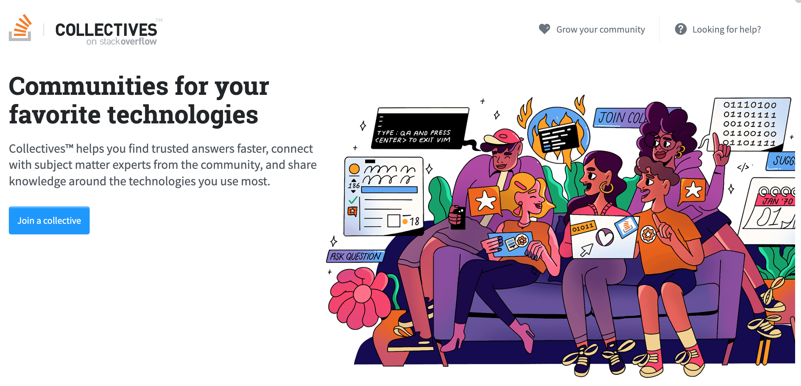

The OpenAI API can be applied to virtually any task that involves understanding or generating natural language, code, or images. We offer a spectrum of models with different levels of power suitable for different tasks, as well as the ability to fine-tune your own custom models. These models can be used for everything from content generation to semantic search and classification.
The API is powered by a set of models with different capabilities and price points. GPT-4 is our latest and most powerful model. GPT-3.5-Turbo is the model that powers ChatGPT and is optimized for conversational formats. To learn more about these models and what else we offer, visit our models documentation.
This is Red text, Green text, Gray text, Purple text, Orange text, Yellow text. This is link content, underline text, bold text, strikethrough text, italic text.
This is Red text, Green text, Gray text, Purple text, Orange text, Yellow text. This is link content, underline text, bold text, strikethrough text, italic text. (Content by copy)
Quote test
Our models understand and process text by breaking it down into tokens. Tokens can be words or just chunks of characters. For example, the word “hamburger” gets broken up into the tokens “ham”, “bur” and “ger”, while a short and common word like “pear” is a single token. Many tokens start with a whitespace, for example “ hello” and “ bye”.
The number of tokens processed in a given API request depends on the length of both your inputs and outputs. As a rough rule of thumb, 1 token is approximately 4 characters or 0.75 words for English text. One limitation to keep in mind is that your text prompt and generated completion combined must be no more than the model's maximum context length (for most models this is 2048 tokens, or about 1500 words). Check out our tokenizer tool to learn more about how text translates to tokens.
Quote 1
2
3
Read 4
5
6. OpenAI’s mission is to create artificial intelligence systems that benefit everyone. To that end, we invest heavily in research and engineering to ensure our AI systems are safe and secure. However, as with any complex technology, we understand that vulnerabilities and flaws can emerge.
List test
You are authorized to perform testing in compliance with this policy.
Follow this policy and any other relevant agreements. In case of inconsistency, this policy takes precedence.
Promptly report discovered vulnerabilities.
As part of this policy, we commit to:
Provide Safe Harbor protection, as outlined below, for vulnerability research conducted according to these guidelines.
Cooperate with you in understanding and validating your report, ensuring a prompt initial response to your submission.
Remediate validated vulnerabilities in a timely manner.
Acknowledge and credit your contribution to improving our security, if you are the first to report a unique vulnerability that leads to a code or configuration change.
Local Image

ToDo List (with divider)
Choose classes that map to a single token. At inference time, specify max_tokens=1 since you only need the first token for classification.
Use a separator at the end of the prompt, e.g. \n\n###\n\n.Remember to also append this separator when you eventually make requests to your model.
Ensure that the prompt + completion doesn't exceed 2048 tokens, including the separator